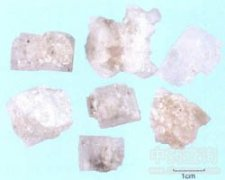

大青盐

拼音
Dà Qīnɡ Yán
别名
青盐、石盐、戎盐
来源
为一种结晶性石盐。全年可采，自盐湖中取出，晒干。
生境分布
生态环境：多形成于干涸含盐盆地和现代盐湖中，为盐湖中化学沉积而成，还包括不同地质时代沉积层中的崖(岩)盐，且多为原生盐。因常有混入物而不同于光明盐和人工炼制的食盐。 资源分布：主产于内蒙古、青海、新疆、西藏、四川，其他省区亦有产出。
药材特点
呈方块形和不规则的多棱形，直径约0.5～2厘米。青白色至暗白色或略带黄色，半透明，多数颗粒有一至数个小孔洞。质硬，可溶于水。微臭，味咸。
性状
性状鉴别 本品单晶体呈立方体状，多棱，常连结在一起，呈不规则块状。一般粒径0.2-2.0CM。大颗粒者可见漏斗状生长遗迹，呈不规则凹窝形状。青白色或暗白色，半透明；脂肪样光泽，有的可见分布不均匀的蓝色斑点。质硬脆，易砸碎，断面洁净，玻璃样光泽。气微，味咸。(彩照26) 以颗粒大、有空洞、立方形、色暗白、洁净者为佳。 显微鉴别 透射偏光镜下，无色透明，多呈方形或不规则形；突起和糙面几乎见不到(因折射率N=1.5443，同树胶相近)。正交偏光间全消光；干涉色均质性；有时因应力影响可有微弱的干涉色。
性味
咸，寒。
功能主治
凉血，明目。用于吐血，衄血，尿血，外治目赤肿痛，牙痛。
用法用量
3～5分。外用适量，研末搽牙或化水漱口洗目。
化学成分
主要为氯化钠(NaCl)。此外还夹杂有氯化钾(KCl)，氯化镁(MgCl2)，氯化钙(CaCl2)，硫酸镁(MgSO4)，硫酸钙(CaSO4)和铁(Fe)等，其所含杂质多半是机械混入物。
药理作用
1：无药理作用数据
摘录
《全国中草药汇编》